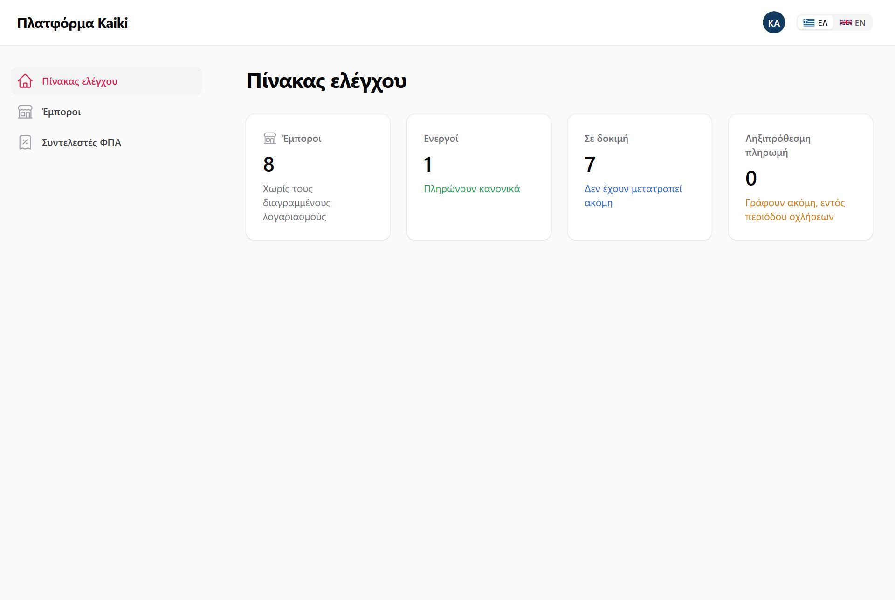
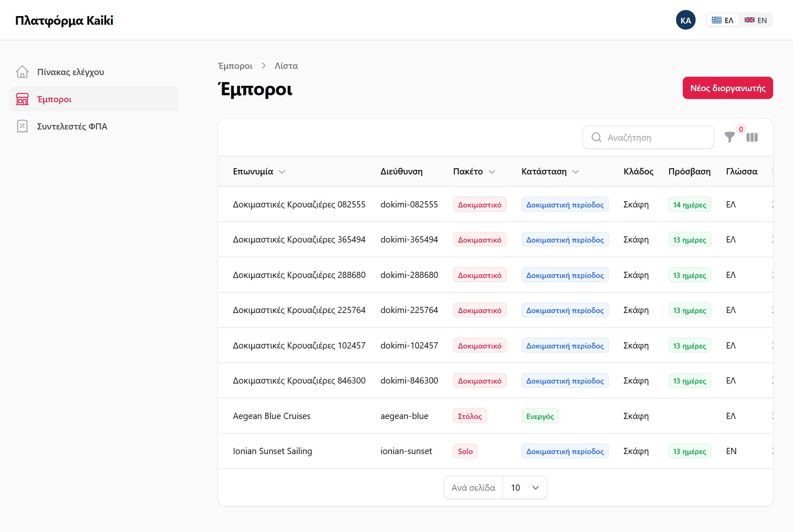
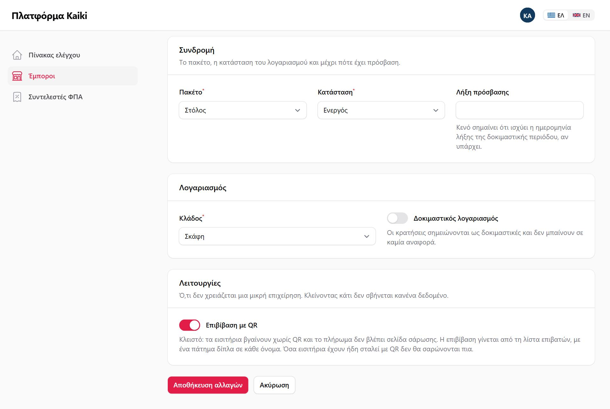
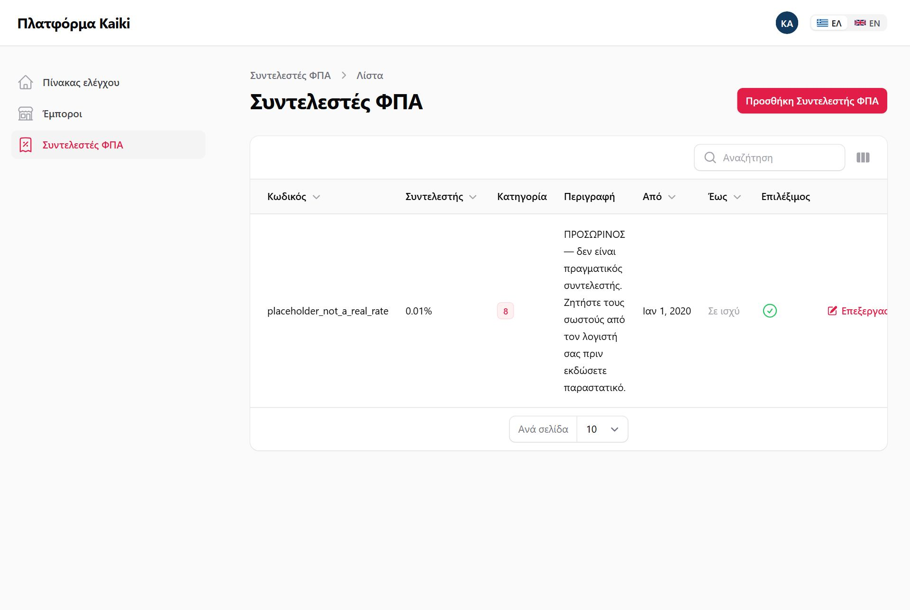

Αυτό το μέρος δεν αφορά κανέναν διοργανωτή. Είναι για όποιον λειτουργεί το ίδιο το Kaiki, και βρίσκεται σε ξεχωριστή διεύθυνση με ξεχωριστό λογαριασμό.
Ο πίνακας του διοργανωτή είναι στο /app και ο πίνακας της πλατφόρμας
στο /admin. Ένας λογαριασμός ανήκει στον έναν ή στον άλλον, ποτέ και
στους δύο, και ο έλεγχος γίνεται στην πόρτα κάθε πίνακα.
Ο λογαριασμός της πλατφόρμας δεν ανήκει σε κανέναν διοργανωτή, οπότε δεν έχει δικαιώματα μέσα σε κανέναν — δεν διαβάζει κρατήσεις, ονόματα επισκεπτών ή στοιχεία επικοινωνίας κανενός. Δεν είναι επίσης υλοποιημένη καμία δυνατότητα να δει κάποιος τον πίνακα σαν να ήταν ο διοργανωτής.


Από εδώ ανοίγει νέος διοργανωτής: επωνυμία, διεύθυνση, email, και ο ιδιοκτήτης, που παίρνει πρόσκληση και ορίζει μόνος του κωδικό — δεν τον πληκτρολογεί κανείς άλλος. Και σε έναν υπάρχοντα αλλάζουν έξι πράγματα: πακέτο, κατάσταση, λήξη πρόσβασης, δοκιμαστικός λογαριασμός, κλάδος, και οι λειτουργίες. Επωνυμία, ΑΦΜ και χρώματα τα αλλάζει μόνο ο ίδιος. Διαγραφή δεν υπάρχει.
Κάθε αλλαγή ζητά αιτιολογία πριν αποθηκευτεί, και γράφεται στο ιστορικό ενεργειών του ίδιου του διοργανωτή — ποιος, πότε, γιατί, και μόνο ό,τι άλλαξε. Αν σας ρωτήσει «ποιος μας έβαλε σε μόνο ανάγνωση;», η απάντηση είναι στη δική του οθόνη.

Στην ίδια φόρμα, κάτω κάτω, είναι ο διακόπτης Επιβίβαση με QR. Είναι ανοιχτός για κάθε διοργανωτή, και τον κλείνετε για όποιον δεν σαρώνει εισιτήρια — ένα σκάφος, λίγοι επιβάτες που τους ξέρει. Κλειστός σημαίνει: εισιτήρια χωρίς QR, καμία σάρωση, και επιβίβαση από τη λίστα με ένα πάτημα δίπλα στο όνομα, και στη σελίδα που δουλεύει χωρίς σήμα. Δεν σβήνεται κανένα δεδομένο.
Όσα εισιτήρια έχουν ήδη σταλεί με QR δεν σαρώνονται πια μόλις κλείσει. Οι επιβάτες τους επιβιβάζονται κανονικά από τη λίστα, αλλά το πλήρωμα πρέπει να το ξέρει πριν βρεθεί στην προβλήτα.

Ο μηχανισμός υπάρχει· οι αριθμοί περιμένουν απάντηση λογιστή — ποιος συντελεστής ισχύει σε ημερήσια εκδρομή, σε μεταφορά, σε ναύλωση. Είναι ένα από τα λίγα σημεία όπου το Kaiki δεν μπορεί να προχωρήσει μόνο του, και αφορά το επόμενο στάδιο, τα παραστατικά.